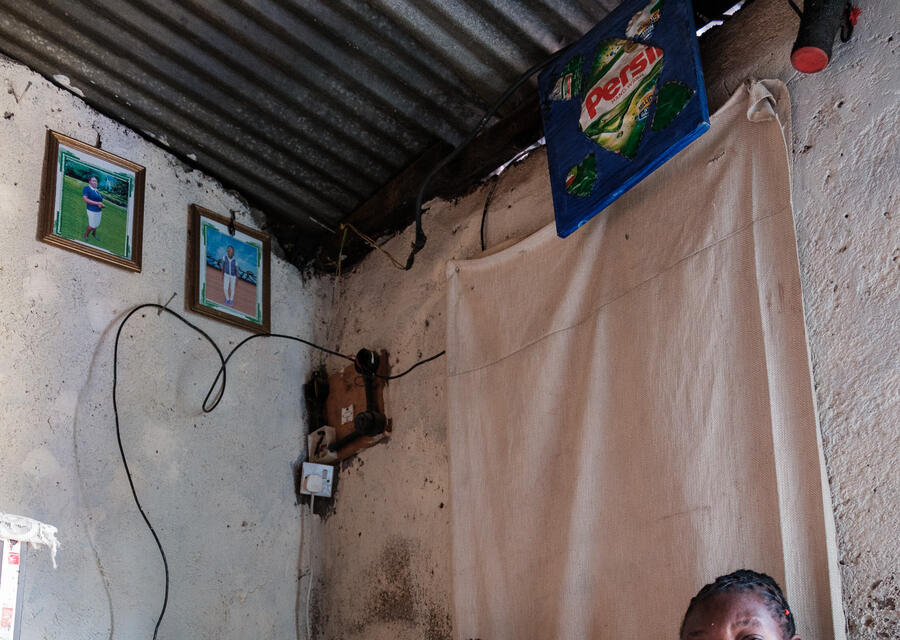
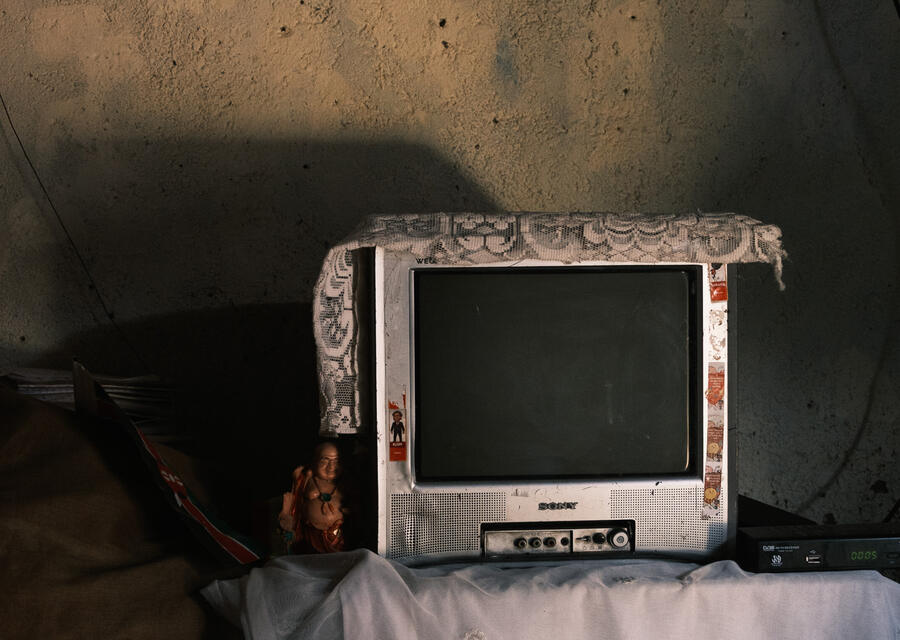

Bei unseren Besuchen in Kenia dürfen wir tief in das Leben vieler Familien eintauchen. In dieser Reihe zeigen wir, wie unterschiedlich die Herausforderungen sind – und wie sehr eure Unterstützung hilft.
Bei unseren Besuchen dürfen wir tief in das Leben vieler Familien eintauchen. Klick auf ein Kind, um seine Geschichte zu lesen.
Dickens, Travis, Wesley, Morgan und Sharlin wachsen bei ihren Großeltern auf. Ihre Eltern können sich weder emotional noch finanziell um sie kümmern – und so haben Raphael Ouma und seine Frau ohne zu zögern alle fünf Kinder bei sich aufgenommen.
Raphael arbeitet als Schreiner. Voller Stolz zeigt er uns sein Zuhause, das er mit eigenen Händen gebaut und eingerichtet hat. Zwischen selbstgemachten Möbeln erzählt er von den Herausforderungen des Alltags – und davon, wie wichtig es ihm ist, seinen Enkelkindern Halt und Sicherheit zu geben.
Umso mehr freut es uns, Raphaels beeindruckendes Engagement zu unterstützen: Wir übernehmen die Schulgebühren für alle fünf Kinder und hoffen, den Alltag der Familie damit ein Stück leichter zu machen.
Als Velmas Mutter Caroline Atieno 2012 ihr viertes Kind zur Welt bringt, trennt sie sich vom Vater ihrer Kinder – eine Entscheidung, die sie aus eigener Kraft getroffen hat, nachdem sie häusliche Gewalt erlebt hatte. Seitdem trägt sie die Verantwortung für die Familie allein und verdient ihren Lebensunterhalt, indem sie Samosas zubereitet und Wäsche in der Nachbarschaft wäscht.
Wir bewundern Carolines Mut und ihre Stärke, jeden Tag für sich und ihre Kinder einzustehen. Sie ist eine von vielen beeindruckenden alleinerziehenden Frauen in den Slums von Nairobi, die ihren Alltag mit Würde, Entschlossenheit und enormer Kraft meistern.
Ihr Selbstbewusstsein und ihre Unabhängigkeit spiegeln sich schon jetzt in ihren beiden Töchtern wider: Die älteste hat gerade die weiterführende Schule abgeschlossen und möchte mit einer Ausbildung im Gastronomiebereich bald dazu beitragen, ihre Mutter finanziell zu entlasten.


Die kleine Sarah haben wir in unserer Bücherei kennengelernt. Teddy hat ihre Familie besucht, um herauszufinden, wie die Situation zu Hause ist: Sarah trägt jeden Tag die gleiche zerrissene Kleidung und ist auffallend dünn.
In ihrem circa acht Quadratmeter großen Zimmer lebt sie mit sechs ihrer acht Geschwister und beiden Eltern. Ihr Vater erzählt von seinen Sorgen und der täglichen Herausforderung, als Tagelöhner genug Geld aufzutreiben, um seinen Kindern wenigstens eine Mahlzeit zu ermöglichen. Während er spricht, ringt er immer wieder mit den Tränen.
Dank eurer Unterstützung können wir die Schulgebühren für Sarah und ihre Geschwister übernehmen. Für die Familie bedeutet das etwas weniger tägliche Sorge – und für die Kinder die Chance, unbeschwerter zu lernen und zu wachsen.
2026 wurde in Kenia erstmals das reformierte Schulsystem umgesetzt: In den letzten drei Schuljahren werden die Jugendlichen interessenspezifisch gefördert und je nach Examensnote und Präferenz einer Schule zugeteilt. Von unseren Kindern waren sechs von einem Schulwechsel betroffen – die Zuteilung kam teils erst in der Woche vor Schulstart, oft an weit entfernte Schulen. Durch viele Telefonate und großes Engagement von Teddy und Joseph hat am Ende alles gut funktioniert.
Einen Jungen dürfen wir dabei besonders feiern: Vickstone hat im Examen so gut abgeschnitten, dass er ein Stipendium der Regierung erhalten hat und nun ein sehr gutes Internat in Nairobi besucht – unser erster Stipendiat. Zum Schuljahr 2027 werden 27 weitere Kinder die Schule wechseln.